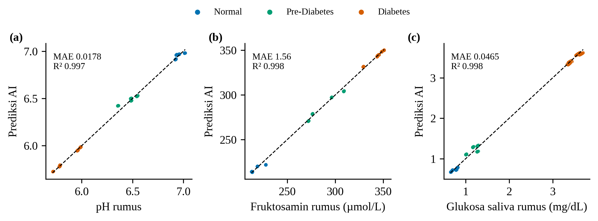

DATA SIMULASI13 sesi · 292 jendelaleave-one-session-outk = 0,44
±92%akurasi
3 kelas
3 kelas
0,92macro
F1-score
F1-score
3 kanal gabungan > 1 kanal: lebih tahan variasi antar-orang

Tiga tingkat tegangan terpisah untuk Normal, Prediabetes, dan Diabetes.
Tegangan → Biomarka (SVR)

MAE hanya 1,1–1,5% dari rentang tiap parameter, R² ≥ 0,997 pada sesi yang tidak dilatihkan. Regresi linear setara karena data dibuat dari rumus linear.
Akurasi Klasifikasi (SVM)

| Kelas | Presisi | Recall | F1 |
|---|---|---|---|
| Normal | 90% | 90% | 90% |
| Prediabetes | 89% | 86% | 87% |
| Diabetes | 98% | 99% | 99% |
| Macro | 93% | 92% | 92% |
Rerata 100 pengulangan. Belum diuji pada subjek nyata.